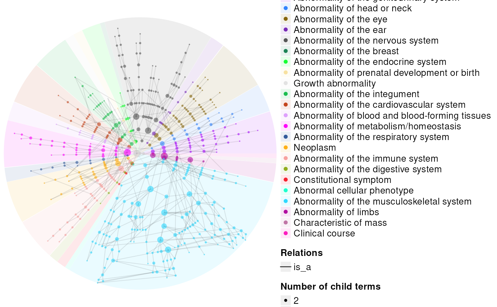
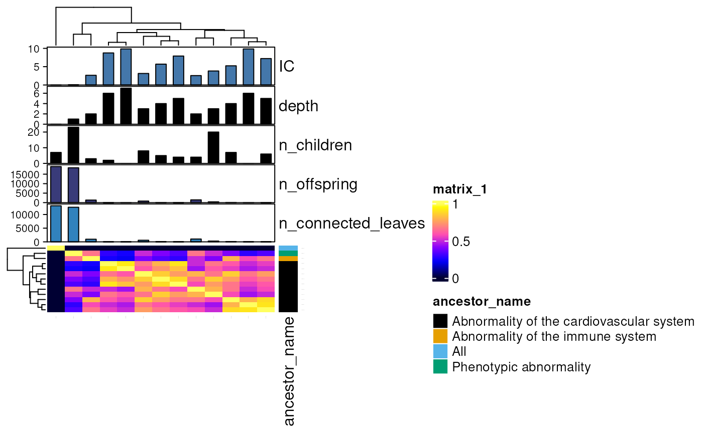

Functions to plot data.
plot_clinvar(
hits,
x = "region",
y = "N",
fill = "Type",
by = c("build", "region", "Type", "ClinSigSimple"),
rows = "ClinSigSimple"
)
plot_ggnetwork(
g,
colour_var = "x",
size_var = colour_var,
label_var = "name",
hoverbox_column = "hover",
interactive = TRUE,
show_plot = TRUE,
...
)
plot_graph_3d(
g,
layout_func = igraph::layout.fruchterman.reingold,
id_var = "name",
node_color_var = "ancestor_name",
edge_color_var = "zend",
text_color_var = node_color_var,
node_symbol_var = "ancestor_name",
node_palette = pals::kovesi.cyclic_mrybm_35_75_c68_s25,
edge_palette = pals::kovesi.cyclic_mrybm_35_75_c68_s25,
node_opacity = 0.75,
edge_opacity = 0.5,
kde_palette = pals::gnuplot,
add_kde = TRUE,
extend_kde = 1.5,
bg_color = kde_palette(6)[1],
add_labels = FALSE,
keep_grid = FALSE,
aspectmode = "cube",
hover_width = 100,
label_width = 100,
seed = 2023,
showlegend = TRUE,
show_plot = TRUE,
save_path = tempfile(fileext = "plot_graph_3d.html"),
verbose = TRUE
)
plot_graph_visnetwork(
g,
label_var = "name",
size_var = "degree",
colour_var = size_var,
invert_colour_var = TRUE,
columns = get_graph_colnames(g),
preferred_palettes = NULL,
selectedBy = label_var,
show_plot = TRUE,
layout = "layout_with_kk",
solver = "forceAtlas2Based",
physics = FALSE,
forceAtlas2Based = list(avoidOverlap = 0.5, gravitationalConstant = -50),
scaling = NULL,
smooth = list(enabled = TRUE, type = "cubicBezier", roundness = 0.5),
add_visExport = FALSE,
degree = 1,
width = "100%",
height = "90vh",
highlight_color = "#00FFFFCF",
randomSeed = 2024,
main = NULL,
submain = NULL,
save_path = tempfile(fileext = "_visnetwork.html")
)
plot_ontology(
ont,
terms = NULL,
types = c("circular", "graphviz", "tidygraph", "visnetwork"),
...
)
plot_ontology_circular(ont, ...)
plot_ontology_graphviz(ont, ...)
plot_ontology_heatmap(
ont,
annot = data.table::data.table(ont@elementMetadata),
X = ontology_to(ont, to = "similarity"),
fontsize = ont@n_terms * 4e-04,
row_labels = ont@terms,
column_labels = row_labels,
name = NULL,
row_side_vars = c("ancestor_name"),
col_side_vars = c("IC", "depth", "n_children", "n_offspring", "n_connected_leaves"),
col = pals::gnuplot(),
show_plot = TRUE,
save_path = tempfile(fileext = "plot_ontology_heatmap.pdf"),
height = 12,
width = height * 1.1,
seed = 2023,
types = c("heatmaply", "ComplexHeatmap")[2],
...
)
plot_ontology_tidygraph(ont, ...)
plot_ontology_visnetwork(ont, ...)
plot_save(plt, path, width = 7, height = width)
plot_ttd(dat_sub)
plot_upheno_heatmap(
plot_dat,
ont,
hpo_ids = NULL,
value.var = c("phenotype_genotype_score", "prop_intersect", "equivalence_score",
"subclass_score"),
min_rowsums = NULL,
cluster_from_ontology = FALSE,
save_dir = tempdir(),
height = 15,
width = 10
): Number. Default to undefined. This gives a node an initial x position. When using the hierarchical layout, either the x or y position is set by the layout engine depending on the type of view. The other value remains untouched. When using stabilization, the stabilized position may be different from the initial one. To lock the node to that position use the physics or fixed options.
: Number. Default to undefined. This gives a node an initial y position. When using the hierarchical layout, either the x or y position is set by the layout engine depending on the type of view. The other value remains untouched. When using stabilization, the stabilized position may be different from the initial one. To lock the node to that position use the physics or fixed options.
ggnetwork object (or an igraph/tbl_graph to be converted to ggnetwork format).
Column to color nodes by.
Column to scale node size by.
Column containing the label for each node in a graph (e.g. "hpo_name").
Make the plot interactive.
Print the plot after it's been generated.
Arguments passed on to ggplot2::aes, simona::dag_circular_viz, simona::dag_graphviz, base::plot, simona::dag_graphviz
dagAn ontology_Dag object.
highlightA vector of terms to be highlighted on the DAG.
startStart of the circle, measured in degree.
endEnd of the circle, measured in degree.
partition_by_levelIf node_col is not set, users can cut the DAG into clusters with different node colors. The partitioning is applied by partition_by_level().
partition_by_sizeSimilar as partition_by_level, but the partitioning is applied by partition_by_size().
node_colColors of nodes. If the value is a vector, the order should correspond to terms in dag_all_terms().
node_transparencyTransparency of nodes. The same format as node_col.
node_sizeSize of nodes. The same format as node_col.
edge_colA named vector where names correspond to relation types.
edge_transparencyA named vector where names correspond to relation types.
legend_labels_fromIf partitioning is applied on the DAG, a legend is generated showing different top terms. By default, the legend labels are the term IDs. If there are additionally column stored in the meta data frame of the DAG object, the column name can be set here to replace the term IDs as legend labels.
legend_labels_max_widthMaximal width of legend labels measured by the number of characters per line. Labels are wrapped into multiple lines if the widths exceed it.
other_legendsA list of legends generated by ComplexHeatmap::Legend().
use_rasterWhether to first write the circular image into a temporary png file, then add to the plot as a raster object?
newpageWhether call grid::grid.newpage() to create a new plot?
node_paramA list of parameters. Each parameter has the same format. The value can be
a single scalar, a full length vector with the same order as in dag_all_terms(),
or a named vector that contains a subset of terms that need to be customized.
The full set of parameters can be found at https://graphviz.org/docs/nodes/.
edge_paramA list of parameters. Each parameter has the same format. The value can be a single
scalar, or a named vector that contains a subset of terms that need to be customized.
The full set of parameters can be found at https://graphviz.org/docs/edges/.
If the parameter is set to a named vector, it can be named by relation types c("is_a" = ...),
or directly relations c("a -> b" = ...). Please see the vignette for details.
Layout function for the graph.
Variable in the vertex metadata to color nodes by.
Variable in the edge metadata to color edges by.
Variable in the node metadata to color text by.
Variable in the vertex metadata to shape nodes by.
Color palette function for the nodes/points.
Color palette function for the edges/lines.
Node opacity.
Edge opacity.
Color palette function for the KDE plot.
Add a kernel density estimation (KDE) plot below the 3D scatter plot (i.e. the "mountains" beneath the points).
Extend the area that the KDE plot covers.
Plot background color.
Add phenotype name labels to each point.
Keep all grid lines and axis labels.
The proportions of the 3D plot. See the plotly documentation site for details.
Maximum width of the hover text.
Maximum width of the label text.
Set the seed for reproducible clustering.
Show node fill legend.
Path to save interactive plot to as a self-contained HTML file.
Print messages.
Names of columns to map colour palettes to.
Preferred palettes to use for each column.
: Custom option. Character or a named list. Add a multiple selection based on column of node data.frame creating an HTML select element. Not available for DOT and Gephi.
"variable" : Character. Column name of selection variable.
"values : Optional. Vector of possible values. Default to all values in nodes data.frame.
"selected" : Optional. Integer/Character. Initial selection. Default to NULL
"style" : Optional. Character. HTML style of list. Default to 'width: 150px; height: 26px'.
"multiple" : Optional. Boolean. Default to FALSE. If TRUE, you can affect multiple groups per nodes using a comma ("gr1,gr2")
"hideColor" : Optional. String. Color for hidden nodes/edges. Use a rgba definition. Default to rgba(200,200,200,0.5)
"main" : Optional. Default to "Select by variable"
"sort" : Optional. If values is NULL, sort all possible values ?. Default to TRUE
"highlight" : Optional. Boolean. Run highlightNearest if defined on each selected node ? Default to FALSE
: Character Name of igraph layout function to use. Default to "layout_nicely"
: String. Default to 'barnesHut'. You can select your own solver. Possible options: 'barnesHut', 'repulsion', 'hierarchicalRepulsion', 'forceAtlas2Based'. When setting the hierarchical layout, the hierarchical repulsion solver is automaticaly selected, regardless of what you fill in here.
: Boolean. Default to FALSE. Enabled physics on nodes ?
named list of options
"theta" : Number. Default to 0.5. This parameter determines the boundary between consolidated long range forces and individual short range forces. To oversimplify higher values are faster but generate more errors, lower values are slower but with less errors.
"gravitationalConstant" : Number. Default to -50. Gravity attracts. We like repulsion. So the value is negative. If you want the repulsion to be stronger, decrease the value (so -10000, -50000).
"centralGravity" : Number. Default to 0.01. There is a central gravity attractor to pull the entire network back to the center.
"springLength" : Number. Default to 100. The edges are modelled as springs. This springLength here is the the rest length of the spring.
"springConstant" : Number. Default to 0.08. This is how 'sturdy' the springs are. Higher values mean stronger springs.
"damping" : Number. Default to 0.4. Accepted range: [0 .. 1]. The damping factor is how much of the velocity from the previous physics simulation iteration carries over to the next iteration.
"avoidOverlap" : Number. Default to 0. Accepted range: [0 .. 1]. When larger than 0, the size of the node is taken into account. The distance will be calculated from the radius of the encompassing circle of the node for both the gravity model. Value 1 is maximum overlap avoidance.
: Named list. If the value option is specified, the size of the nodes will be scaled according to the properties in this object.
"min" : Number. Default to 10. If nodes have a value, their sizes are determined by the value, the scaling function and the min max values.
"max" : Number. Default to 30. This is the maximum allowed size when the nodes are scaled using the value option.
"label" : Named list or Boolean. Default to Named list. This can be false if the label is not allowed to scale with the node. If true it will scale using default settigns. For further customization, you can supply an object.
"enabled" : Boolean. Default to false. Toggle the scaling of the label on or off. If this option is not defined, it is set to true if any of the properties in this object are defined.
"min" : Number. Default to 14. The minimum font-size used for labels when scaling.
"max" : Number. Default to 30. The maximum font-size used for labels when scaling.
"maxVisible" : Number. Default to 30. When zooming in, the font is drawn larger as well. You can limit the perceived font size using this option. If set to 30, the font will never look larger than size 30 zoomed at 100%.
"drawThreshold" : Number. Default to 5. When zooming out, the font will be drawn smaller. This defines a lower limit for when the font is drawn. When using font scaling, you can use this together with the maxVisible to first show labels of important nodes when zoomed out and only show the rest when zooming in.
"customScalingFunction" : Function. If nodes have value fields, this function determines how the size of the nodes are scaled based on their values.
: Boolean. Default to FALSE. Use smooth edges ?
Add PDF download button.
: Number. Default to 1. The width of the edge. If value is set, this is not used.
: String. Default to "100%". The height of the network in pixels or as a percentage.
: Number. The nodes are randomly positioned initially. This means that the settled result is different every time. If you provide a random seed manually, the layout will be the same every time.
: For add a title. Character or a named list.
"text" : Character. Title.
"style" : Optional. Character. HTML style of title. Default to 'font-family:Georgia, Times New Roman, Times, serif;font-weight:bold;font-size:20px;text-align:center;'.
: For add a subtitle. Character or a named list.
"text" : Character. Subtitle.
"style" : Optional. Character. HTML style of submain. Default to 'font-family:Georgia, Times New Roman, Times, serif;font-size:12px;text-align:center;'.
An ontology of class ontology_DAG.
A subset of HPO IDs to include in the final dataset and plots (e.g. c("HP:0001508","HP:0001507")).
Types of graph to produce. Can be one or more.
Axis labels font size.
Optional row labels which are put as row names in the heatmap.
Optional column labels which are put as column names in the heatmap.
Name of the heatmap. By default the heatmap name is used as the title of the heatmap legend.
Variables to include in row-side metadata annotations.
Variables to include in column-side metadata annotations.
A vector of colors if the color mapping is discrete or a color mapping function if the matrix is continuous numbers (should be generated by colorRamp2). If the matrix is continuous, the value can also be a vector of colors so that colors can be interpolated. Pass to ColorMapping. For more details and examples, please refer to https://jokergoo.github.io/ComplexHeatmap-reference/book/a-single-heatmap.html#colors .
Directory to save cached data.
Column containing the unique identifier for each node in a graph (e.g. "name").
data.table of prioritised targets generated by prioritise_targets.
A named list containing the plot and the data.
A 3D interactive plotly object.
Null
Null
Plot
Null
Null
plot_clinvar(): plot_
Plot mapped variant annotations.
plot_ggnetwork(): plot_
Plot a ggnetwork.
plot_graph_3d(): plot_
3D network
Plot a subset of the HPO as a 3D network.
plot_graph_visnetwork(): plot_
Plot graph using visNetwork.
plot_ontology(): plot_
plot_ontology_circular(): plot_
plot_ontology_graphviz(): plot_
Plot ontology: graphviz
Make a circular plot of an ontology.
plot_ontology_heatmap(): plot_
Plot heatmap
Plot a phenotype x phenotype correlation matrix based on genetic overlap.
plot_ontology_tidygraph(): plot_
plot_ontology_visnetwork(): plot_
plot_save(): plot_
Save a plot using grDevices or visSave.
plot_ttd(): plot_
Plot TTD.
plot_upheno_heatmap(): plot_
ont <- get_ontology(terms=10)
#> ℹ All local files already up-to-date!
#> Importing cached file: /github/home/.cache/R/KGExplorer/mondo.owl
#> Adding term metadata.
#> IC_method: IC_offspring
#> Adding ancestor metadata.
#> Getting absolute ontology level for 31,550 IDs.
#> 2412 ancestors found at level 2
#> Translating all terms to names.
#> + Returning a vector of terms (same order as input).
#> Converted ontology to: adjacency
#> Getting absolute ontology level for 31,550 IDs.
#> Randomly sampling 10 term(s).
g <- ontology_to(ont, to="tbl_graph")
#> Converted ontology to: tbl_graph
g <- add_hoverboxes(g)
#> Making hoverboxes from: 'name', 'short_id', 'label', 'namespace', 'definition', 'IC', 'depth', 'n_children', 'n_ancestors', 'n_parents', 'n_offspring', 'n_connected_leaves', 'ancestor', 'ancestor_name', 'n_edges', 'ontLvl'
#> Adding hoverboxes to data.table.
out <- plot_ggnetwork(g, label_var="label")
#> Loading required namespace: ggnetwork
#> Registered S3 method overwritten by 'ggnetwork':
#> method from
#> fortify.igraph ggtree
#> Creating ggnetwork plot.
#> Converting graph to ggnetwork.
ont <- get_ontology("hp", terms=10, add_ancestors=TRUE)
#> ℹ All local files already up-to-date!
#> Importing cached file: /github/home/.cache/R/KGExplorer/hp-international.owl
#> Adding term metadata.
#> IC_method: IC_offspring
#> Adding ancestor metadata.
#> Getting absolute ontology level for 25,301 IDs.
#> 314 ancestors found at level TRUE
#> Translating all terms to names.
#> + Returning a vector of terms (same order as input).
#> Converted ontology to: adjacency
#> Getting absolute ontology level for 25,301 IDs.
#> Randomly sampling 10 term(s).
g <- ontology_to(ont, to="tbl_graph")
#> Converted ontology to: tbl_graph
plt <- plot_graph_3d(g=g, show_plot=FALSE)
#> Converting igraph to plotly data.
#> Translating all terms to names.
#> Ontology not found via 'rols.' Trying method='github'.'
#> Importing cached file: /github/home/.cache/R/KGExplorer/hp-base.obo
#> Adding term metadata.
#> IC_method: IC_offspring
#> Adding ancestor metadata.
#> Getting absolute ontology level for 17,874 IDs.
#> 70 ancestors found at level 2
#> Translating all terms to names.
#> + Returning a vector of terms (same order as input).
#> Converted ontology to: adjacency
#> Getting absolute ontology level for 17,874 IDs.
#> + Returning a vector of terms (same order as input).
#> Warning: 'surface' objects don't have these attributes: 'marker'
#> Valid attributes include:
#> '_deprecated', 'autocolorscale', 'cauto', 'cmax', 'cmid', 'cmin', 'coloraxis', 'colorbar', 'colorscale', 'connectgaps', 'contours', 'customdata', 'customdatasrc', 'hidesurface', 'hoverinfo', 'hoverinfosrc', 'hoverlabel', 'hovertemplate', 'hovertemplatesrc', 'hovertext', 'hovertextsrc', 'ids', 'idssrc', 'legendgroup', 'legendgrouptitle', 'legendrank', 'lighting', 'lightposition', 'meta', 'metasrc', 'name', 'opacity', 'opacityscale', 'reversescale', 'scene', 'showlegend', 'showscale', 'stream', 'surfacecolor', 'surfacecolorsrc', 'text', 'textsrc', 'type', 'uid', 'uirevision', 'visible', 'x', 'xcalendar', 'xhoverformat', 'xsrc', 'y', 'ycalendar', 'yhoverformat', 'ysrc', 'z', 'zcalendar', 'zhoverformat', 'zsrc', 'key', 'set', 'frame', 'transforms', '_isNestedKey', '_isSimpleKey', '_isGraticule', '_bbox'
#> Saving interactive plot --> /tmp/RtmpSu2waH/filea03f5297485fplot_graph_3d.html
#> Warning: 'surface' objects don't have these attributes: 'marker'
#> Valid attributes include:
#> '_deprecated', 'autocolorscale', 'cauto', 'cmax', 'cmid', 'cmin', 'coloraxis', 'colorbar', 'colorscale', 'connectgaps', 'contours', 'customdata', 'customdatasrc', 'hidesurface', 'hoverinfo', 'hoverinfosrc', 'hoverlabel', 'hovertemplate', 'hovertemplatesrc', 'hovertext', 'hovertextsrc', 'ids', 'idssrc', 'legendgroup', 'legendgrouptitle', 'legendrank', 'lighting', 'lightposition', 'meta', 'metasrc', 'name', 'opacity', 'opacityscale', 'reversescale', 'scene', 'showlegend', 'showscale', 'stream', 'surfacecolor', 'surfacecolorsrc', 'text', 'textsrc', 'type', 'uid', 'uirevision', 'visible', 'x', 'xcalendar', 'xhoverformat', 'xsrc', 'y', 'ycalendar', 'yhoverformat', 'ysrc', 'z', 'zcalendar', 'zhoverformat', 'zsrc', 'key', 'set', 'frame', 'transforms', '_isNestedKey', '_isSimpleKey', '_isGraticule', '_bbox'
ont <- get_ontology("hp", terms=10)
#> ℹ All local files already up-to-date!
#> Importing cached file: /github/home/.cache/R/KGExplorer/hp-international.owl
#> Adding term metadata.
#> IC_method: IC_offspring
#> Adding ancestor metadata.
#> Getting absolute ontology level for 25,301 IDs.
#> 900 ancestors found at level 2
#> Translating all terms to names.
#> + Returning a vector of terms (same order as input).
#> Converted ontology to: adjacency
#> Getting absolute ontology level for 25,301 IDs.
#> Randomly sampling 10 term(s).
g <- ontology_to(ont, to="tbl_graph")
#> Converted ontology to: tbl_graph
out <- plot_graph_visnetwork(g)
#> Loading required namespace: visNetwork
#> Creating visNetwork plot.
#> Making hoverboxes from: 'name', 'short_id', 'label', 'namespace', 'definition', 'IC', 'depth', 'n_children', 'n_ancestors', 'n_parents', 'n_offspring', 'n_connected_leaves', 'ancestor', 'ancestor_name', 'n_edges', 'ontLvl'
#> Adding hoverboxes to data.table.
#> Using palette: okabe
#> Warning: Can't find 'name' in node data.frame
#> Saving plot --> /tmp/RtmpSu2waH/filea03f48a8e08e_visnetwork.html
ont <- get_ontology("hp")
#> ℹ All local files already up-to-date!
#> Importing cached file: /github/home/.cache/R/KGExplorer/hp-international.owl
#> Adding term metadata.
#> IC_method: IC_offspring
#> Adding ancestor metadata.
#> Getting absolute ontology level for 25,301 IDs.
#> 900 ancestors found at level 2
#> Translating all terms to names.
#> + Returning a vector of terms (same order as input).
#> Converted ontology to: adjacency
#> Getting absolute ontology level for 25,301 IDs.
res <- plot_ontology(ont,
terms=100,
types="circular",
partition_by_level=2,
edge_transparency=.9)
#> Loading required namespace: DiagrammeR
#> Randomly sampling 100 term(s).
#> converting DAG to a tree...
#>
#> going through 605 / 605 nodes ... Done.
#> calculating term positions on the DAG...
#>
#> going through 605 / 605 nodes ... Done.
#> making plot...
#> adding links...
#> adding terms...
#> Best device size: 10.05 x 6.67 inches.

ont <- get_ontology("hp", terms=2)
#> ℹ All local files already up-to-date!
#> Importing cached file: /github/home/.cache/R/KGExplorer/hp-international.owl
#> Adding term metadata.
#> IC_method: IC_offspring
#> Adding ancestor metadata.
#> Getting absolute ontology level for 25,301 IDs.
#> 900 ancestors found at level 2
#> Translating all terms to names.
#> + Returning a vector of terms (same order as input).
#> Converted ontology to: adjacency
#> Getting absolute ontology level for 25,301 IDs.
#> Randomly sampling 2 term(s).
hm <- plot_ontology_heatmap(ont)
#> Adding ancestor metadata.
#> Ancestor metadata already present. Use force_new=TRUE to overwrite.
#> Creating heatmap: ComplexHeatmap
#> Using palette: okabe
#> Using palette: viridis
#> Using palette: watlington
#> Using palette: stepped2
#> Using palette: inferno
#> Using palette: magma
#> term_sim_method: Sim_WP_1994
#> collecting all ancestors of input terms ...
#>
#> going through 0 / 40 ancestors ...
#>
#> going through 40 / 40 ancestors ... Done.
#> collecting all ancestors of input terms ...
#>
#> going through 0 / 40 ancestors ...
#>
#> going through 40 / 40 ancestors ... Done.
#> Converted ontology to: similarity
#> Saving plot --> /tmp/RtmpSu2waH/filea03fb17566cplot_ontology_heatmap.pdf
